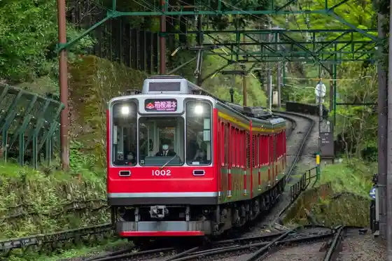
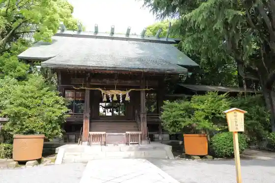
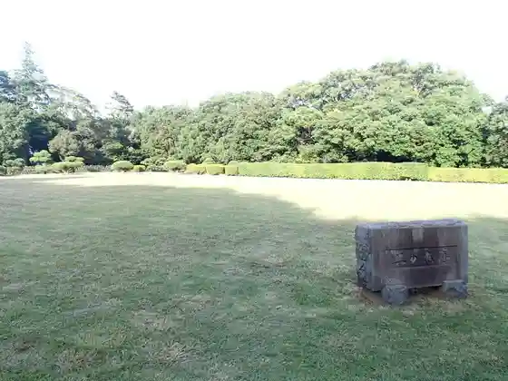
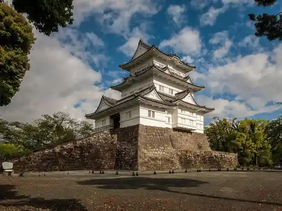

Odawara Castle Park
Odawara, Kanagawa · 0465-23-1373 · Official / source link
Hakonetozan Densha
Odawara, Kanagawa · 0465-32-6821 · Official / source link

Hotoku Ninomiya Shrine
Odawara, Kanagawa · 0465-22-2250 · Official / source link

Ishigaki Yamashiro
Odawara, Kanagawa · 0465-23-1373 · Official / source link

Odawara Shiro
Odawara, Kanagawa · 0465-22-3818 · Official / source link

Soga Shrine
Odawara, Kanagawa · 0465-42-1282 · Official / source link
Choko Yama Sho Ta Tera (Shidare Sakura)
Odawara, Kanagawa · 0465-22-7760 · Official / source link
Odawara Fishing Port
Odawara, Kanagawa · Official / source link
Suzu Hiroka Maboko Museum
Odawara, Kanagawa · 0120-07-4547 · Official / source link
Kanagawa Prefectural Seimei no Hoshi Chikyu Museum
Odawara, Kanagawa · 0465-21-1515 · Official / source link
Foresutoadobencha Odawara
Odawara, Kanagawa · Official / source link
Odawara Literature Museum
Odawara, Kanagawa · 0465-22-9881 · Official / source link
Kyu Matsumoto Gokichi Bettei Chashitsu (Uko Tei)
Odawara, Kanagawa · 0465-20-5693 · Official / source link
Matsunaga Memorial Museum
Odawara, Kanagawa · 0465-22-3635 · Official / source link
Soga Umebayashi
Odawara, Kanagawa · 0465-20-4192 · Official / source link
Odawara Buruueiburijji
Odawara, Kanagawa · Official / source link
Koki Iori
Odawara, Kanagawa · Official / source link
Hojoshi Matsurigoto Ujiteru no Hakasho
Odawara, Kanagawa · 0465-33-1521 · Official / source link
Hojo Inari Kaeruishi
Odawara, Kanagawa · Official / source link
Sakawagawa no Kasumitei
Odawara, Kanagawa · Official / source link
Ninomiya Sontoku Yukari no Matsunami Ki
Odawara, Kanagawa · Official / source link
Kuno Kofun Gun
Odawara, Kanagawa · 0465-33-1521 · Official / source link
Odawara Furawa Garden
Odawara, Kanagawa · 0465-34-2814 · Official / source link
Odawara O Horibata Manyo Baths
Odawara, Kanagawa · 0465-23-1126 · Official / source link
Anesuto Iwata Tanpaiku Hakone
Odawara, Kanagawa · 0465-23-0381 · Official / source link
Otori Su In (Odawara Hachi Fukujin / Jurojin)
Odawara, Kanagawa · Official / source link
Jo Ei Tera
Odawara, Kanagawa · Official / source link
Okubo Shrine
Odawara, Kanagawa · Official / source link
Makino Shin'ichi Bungaku Hi
Odawara, Kanagawa · Official / source link
Inoe Yasufumi Bungaku Hi
Odawara, Kanagawa · Official / source link
Komine O Kane no Dai Ohori Setsu
Odawara, Kanagawa · 0465-33-1521 · Official / source link
Den Hajime Tera
Odawara, Kanagawa · Official / source link
Kyo Kami Shrine
Odawara, Kanagawa · 0465-23-2616 · Official / source link
Ohisa Tera
Odawara, Kanagawa · 0465-24-0830 · Official / source link
Hayakawa Kuchi Iko
Odawara, Kanagawa · Official / source link
Hakushu Doyo Kan
Odawara, Kanagawa · 0465-22-9881 · Official / source link
Toku Tsune In (Hakone Sai no Kawara no Great Buddha)
Odawara, Kanagawa · Official / source link
Matsubara Shrine (Odawara Hojo Jidai no Ujigami Matsuri)
Odawara, Kanagawa · 0465-22-2672 · Official / source link
Ote Monzeki
Odawara, Kanagawa · Official / source link
Chon Tera (Odawara Hachi Fukujin / Bishamonten)
Odawara, Kanagawa · Official / source link
Odawara Shiro So Ko
Odawara, Kanagawa · 0465-33-1521 · Official / source link
Hasu Join Dorui
Odawara, Kanagawa · 0465-33-1521 · Official / source link
Sontoku Memorial Museum
Odawara, Kanagawa · 0465-36-2381 · Official / source link
Enpuku Tera (Odawara Hachi Fukujin / Mizugakari Hotei Mikoto)
Odawara, Kanagawa · 0465-22-9511 · Official / source link
Dai Hasu Tera (Odawara Shichifukujin / Fukurokuju)
Odawara, Kanagawa · 0465-33-1521 · Official / source link
Hasu Fune Tera (Odawara Hachi Fukujin / Daikoku Sonten)
Odawara, Kanagawa · 0465-22-8844 · Official / source link
Odawara Yado Nariwai Koryu Kan
Odawara, Kanagawa · 0465-20-0515 · Official / source link
Oranjie Garuden (Mikan Kari)
Odawara, Kanagawa · 0465-29-0703 · Official / source link
Tokiwa Mokumon SAMURAI Kan
Odawara, Kanagawa · 0465-23-1373 · Official / source link
Okawa Mokko Tokoro (Odawara Shikki)
Odawara, Kanagawa · 0465-22-4630 · Official / source link
Odawara Kamaboko Tori
Odawara, Kanagawa · Official / source link
Kago Main Shop
Odawara, Kanagawa · 0465-23-4530 · Official / source link
Katsuobushi Museum Kago Tsune Shoten
Odawara, Kanagawa · 0465-23-1807 · Official / source link
Odawara Shiro Adobencha (Wanpakurando Nai)
Odawara, Kanagawa · 0465-24-3189 · Official / source link
Odawara Shiro Johokan (Kochu Kitsuke Experience)
Odawara, Kanagawa · Official / source link
Tsuji Village Shokubutsu Park
Odawara, Kanagawa · 0465-24-3189 · Official / source link
Machi Kado Museum (Odawara Ekimae Umeboshi Museum)
Odawara, Kanagawa · Official / source link
Sakawagawa Saikuringurodo
Odawara, Kanagawa · Official / source link
Odawara Shiro NINJA Kan
Odawara, Kanagawa · 0465-22-3818 · Official / source link
Onsen Chigaku Kenkyusho
Odawara, Kanagawa · 0465-23-3588 · Official / source link
TAKUMI Kan
Odawara, Kanagawa · 0465-46-9306 · Official / source link
Sororito Odawara
Odawara, Kanagawa · 090-4055-1543 · Official / source link
Odawara Bunkazai Dan Ko Yuki Ura Sokkojo
Odawara, Kanagawa · 0465-42-9170 · Official / source link
Kozu Yama Hokin Tsuyoshi Tera
Odawara, Kanagawa · 0465-47-2530 · Official / source link
Fishing Port no Eki TOTOCO Odawara
Odawara, Kanagawa · 0465-20-6336 · Official / source link
Mina Haru So
Odawara, Kanagawa · 0465-33-1707 · Official / source link
Oshare Alley
Odawara, Kanagawa · Official / source link
Minaka Odawara
Odawara, Kanagawa · 0465-22-1000 · Official / source link
Daijo In
Odawara, Kanagawa · Official / source link
Kanagawa Prefectural Seisho Supotsu Center
Odawara, Kanagawa · 0465-48-2650 · Official / source link
MONTE iL CHIANTI
Odawara, Kanagawa · 0465-45-0772 · Official / source link
NAKAGAWA298
Odawara, Kanagawa · 0465-22-2040 · Official / source link
Irifune Odawara Ekimae Mise
Odawara, Kanagawa · 0465-24-3400 · Official / source link
Hama Yu
Odawara, Kanagawa · 0465-29-0141 · Official / source link
Toka Ken Higashiguchi Baiten
Odawara, Kanagawa · 090-9100-4492 · Official / source link
Juro Umeboshi Soga no Sato Farm (Wa Sono (Nagomien))
Odawara, Kanagawa · 090-2334-4478 · Official / source link
Odawara Kago Main Shop
Odawara, Kanagawa · 0465-23-4530 · Official / source link
Odawara Oden Wakimoto Jin
Odawara, Kanagawa · 080-9048-6737 · Official / source link
Suzu Hiroka Maboko Village Suzu Nari Market
Odawara, Kanagawa · 0120-07-4547 · Official / source link
Odawara Minato Shokudo
Odawara, Kanagawa · 0465-46-8307 · Official / source link
Toto Maru Shokudo
Odawara, Kanagawa · 0465-20-6336 · Official / source link
Domburi Manjiro
Odawara, Kanagawa · 0465-43-7977 · Official / source link
Hiruton Odawara Resort & Supa Hilton Odawara Resort & Spa
Odawara, Kanagawa · 0465-29-1000 · Official / source link
Shiki Ryori Wagashi Ukyo (Meika Kyorei Kai)
Odawara, Kanagawa · 0465-23-7878 · Official / source link
Odawara Castle Park (Sakura)
Odawara, Kanagawa · 0465-23-1373 · Official / source link
Ko Yuki Ura Beach
Odawara, Kanagawa · 0465-29-0027 · Official / source link
Miyuki no Hama Beach
Odawara, Kanagawa · 0465-33-1521 · Official / source link
Hiruton Odawara Resort & Supa Burasserii Furora
Odawara, Kanagawa · 0465-29-1000 · Official / source link
Hiruton Odawara Resort & Supa Za Robiiraunji
Odawara, Kanagawa · 0465-29-1000 · Official / source link
Suzu Hiroka Maboko Village Kazamatsuri Mise
Odawara, Kanagawa · 0120-07-4547 · Official / source link
Odawara Oden Main Shop
Odawara, Kanagawa · 0465-20-0320 · Official / source link
Mori no Hiroba Kinjiro Kafe
Odawara, Kanagawa · 0465-23-3246 · Official / source link
Hakone Kuchi Gareji Kinjiro Kafe & Guriru
Odawara, Kanagawa · 0465-23-2881 · Official / source link
CAFE SANNOMARU
Odawara, Kanagawa · 0465-46-8403 · Official / source link
Shoku Raku Iori Hotoku
Odawara, Kanagawa · 0465-24-3990 · Official / source link
Resutoransadorubakku
Odawara, Kanagawa · 0465-29-0830 · Official / source link
Odawara Omatsu Sono
Odawara, Kanagawa · 0465-20-8201 · Official / source link
Tensei Sono Odawara Eki Bekkan Sukaidainingu
Odawara, Kanagawa · 0465-23-8080 · Official / source link